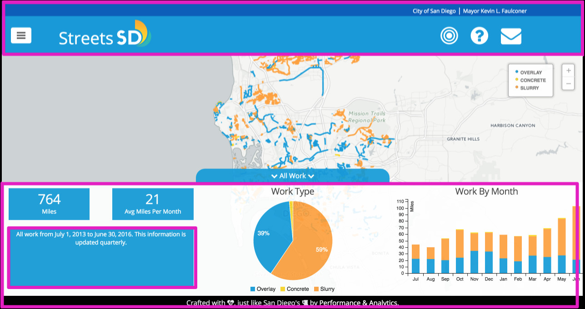
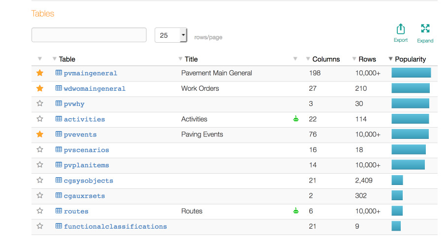
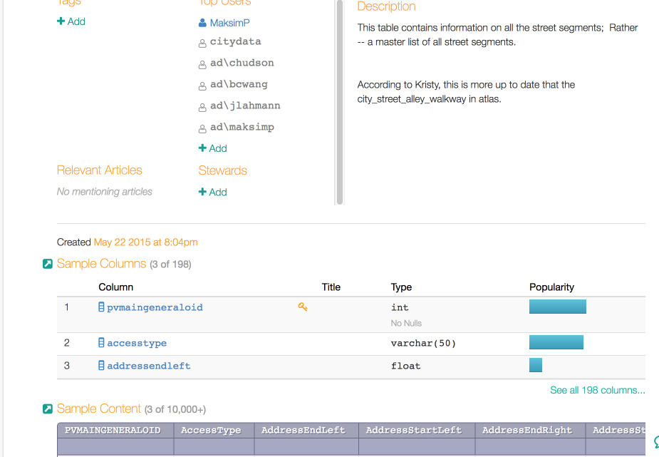
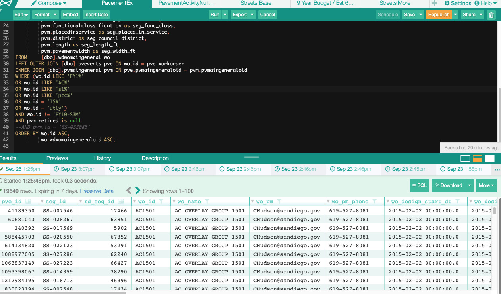
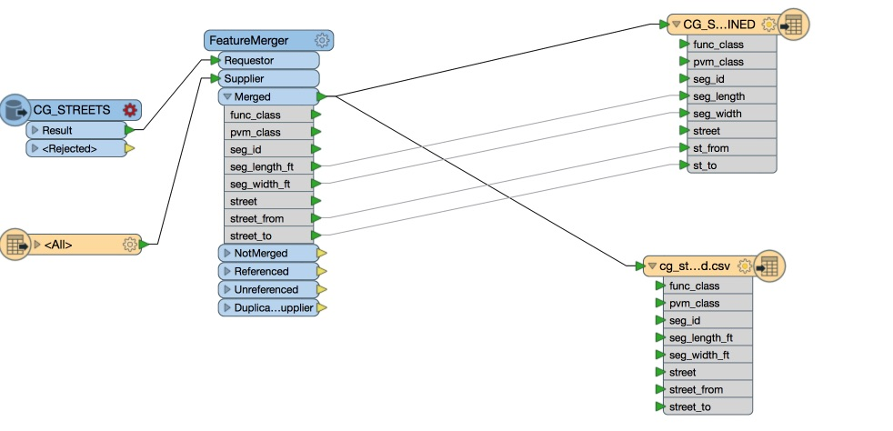

StreetsSD was an interesting project us from an organizational and technical perspective. Let’s peek behind the scenes to see how this all came together.
Overall Architecture
Jekyll
Overall, StreetsSD is a Jekyll site. This allows us to avoid maintenance costs, performance issues, and complexity associated with running database-driven sites. We host it using Github Pages for the wonderful price of $0.

Everything you see outlined in pink above is Jekyll and custom JS. We used the San Diego Style Guide for colors and layouts. The charts on the bottom, the layers, and the text in the explainer boxes are controlled by the views.yml in the repo.
All the dynamic components you see from the layers (FY14, FY15, etc) to the charts and totals are populated through custom SQL queries against data in Carto. They are constructed using the squel library in the sqlBuilder file.
As an example, when you click on the “Work in FY-2016” layer, an event is sent that constructs and sends the query to Carto to display results on a map. Based on the views.yml file, we know that layer has WorkType and WorkByMonth charts, so one more query is constructed and sent to Carto. After additional JS data processing, we are able to display the charts.
Carto
The interactive map itself is all Carto. Most of the visual components (e.g. line styles, legends, hovers) are stored in Carto as well. We don’t love that, because those should be stored in code, but we have an issue on the backlog to address it.

The map in Carto has two “layers” - one for OCI and one for Streetwork, both based off sdstreets_query table. Carto’s model for associating layers to datasets ties them together permanently. By having a virtual dataset that we can impose queries on, we are eliminating the tie between a dataset and a map, giving us more flexibility to flip out the underlying datasets if we need to change schemas.
Then why two layers from one table? Because OCI layers and streetwork layers have slightly different fields and labels. Carto’s interactive UI is tied to a layer, and we had to separate the two. Then, we impose the queries on the layer accordingly. We can probably condense this to one layer using more advanced conditional logic, but we’ll stay away from that for now.
Deployment
We use the master branch as the bleeding edge. That gets deployed to a staging site continuously by CircleCI. The production branch gets deployed to the gh-pages branch, which is what feeds StreetsSD. We get notifications about each step.
Datasets
#####cg_streets_combined
We created this dataset by merging the City’s official street file geographies with essential data from the City’s Pavement Management System. Every other set of data is joined against cg_streets_combined by segment_id to derive the geometries and street names.
#####sd_paving_datasd
This is the full work layer, encompassing work done from the beginning of FY14. We’ll talk about the specifics in the data delivery section. This has no geospatial data. As layers get selected, SQL is generated, applied to this layer, and joined against cg_streets_combined.
#####oci_2011_datasd and oci_2015_datasd
These were created using historical data provided in the Pavement Management System and the new OCI numbers we received from latest run of the most recent vendor. These also have no geospatial data. As layers get selected, SQL is generated, applied to this layer, and joined against cg_streets_combined.
Data Discovery
We partnered with the Transportation and Storm Water Department to build the map. However, we quickly ran into some challenges with understanding the data, and the calculations performed for reporting.
The PVM (let’s use that as the acronym for the Pavement Management System) is an application that is built on top of SQL server using queries and stored procedures. Every month, the streets team has to update IMCAT. IMCAT is a system the City uses to coordinate street work across departments. This way we can avoid the same segment being dug up multiple times in a short time span. The streets team pull a report from the PVM generated by a query and a stored procedure). Then, it’s manually cleaned in Excel (we counted 32 steps), joined with a streets shapefile, and uploaded it to IMCAT.
This is where we started. The data that gets uploaded to IMCAT has to be in a particular format with certain columns, so we couldn’t directly trace that dataset to the query running against PVM. And we couldn’t just guess the query and match the result either - PVM has 319 tables.
A few months ago, the City invested in a tool called Alation exactly for this type of use case. We wanted to be able to maintain data catalogs and keep documentation on the data that we have, allowing data users to be better informed. This database is the first one we connected with Alation.
We built a robust query to continuously pull data. To do this, we used Alation to trace the query the PVM application was running. However, we had no visibility into the stored procedure. To bypass this, we combined information from using the query, the streets team and Alation’s query logs.
Query Log

Tables

Table Internal View + Our Notes

Built Query for Paving Data

Built Query for Street Info

Going through this process gave us an enormous amount of knowledge of street paving information, which we have documented in Alation.
However, we weren’t done yet. We still needed to build the ETL for Street Map Data, IMCAT data (because friends don’t let friends clean data over and over manually), and the CG_STREETS_COMBINED file.
Data Delivery
We have two main queries that pull data without doing much cleaning. We wanted to stay away from cleaning in SQL as a best practice.
streets_base gets pulled by FME, combined with the geospatial base file, and outputs as a shapefile to S3. Carto syncs it down from there:

R pulls Pavement Ex in using Alation’s API and the Alation R Package, completes the 32 manual steps the department normally has to do (with some conditional forks for IMCAT), and then outputs the sd_paving_datasd.csv file into S3. We also make sure to standardize the outgoing data according to our Technical Guidelines. At the same time, we output the IMCAT file to be ingested for the conflict mitigation map.
Verifying Calculations
So, how in the world do we know that our constructed SQL on the client side is doing the right thing and making the right calculations? We use R to verify that the calculations are correct by pulling the data straight from Alation, and duplicating the calculations that the SQL does on Streets Map.
What’s next?
This is an alpha project, and we plan to continue working on it. We will work in sprints As people submit feature or bug requests, we will prioritize them according to what we think we can do during the time allotted. Critical bugs always get fixed first.
Of course, we are more than open to Pull Requests. If there is a feature you really want and we’re just unable to get to it, feel free to discuss it with us in the issue queues, fork the code, and make a Pull Request.